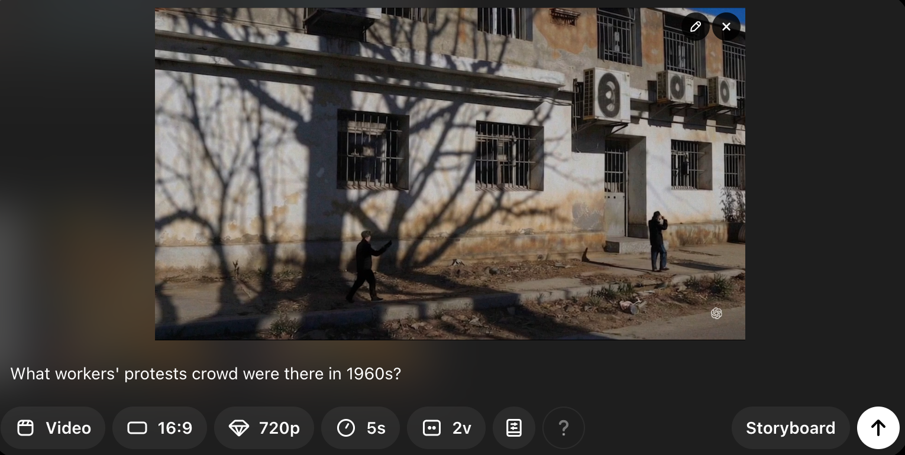
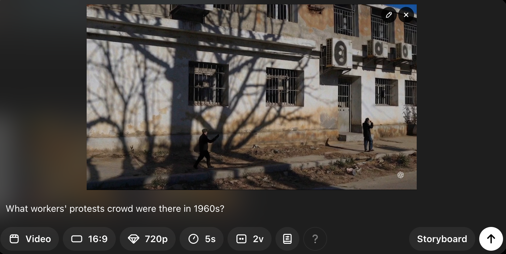
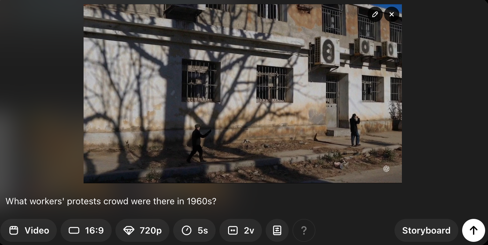
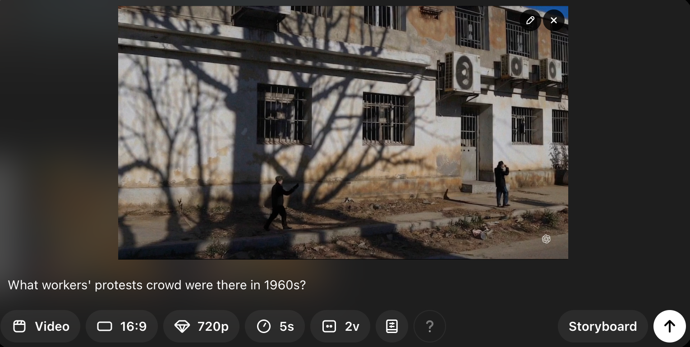

This experiment is the process of thinking and seeing with the machines, including the camera machine and the generative AI video model (Sora).
The video starts with a camera-captured clip and continues on as I posed questions and thoughts to Sora as prompts to generate the next video clip.
All images are “blended” with Sora, instead of using traditional cutting in film editing.
The video attempts to raise questions about memory, vision, intelligence, and violence… What could our agency of thinking and seeing be when confronting vision machines?